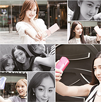
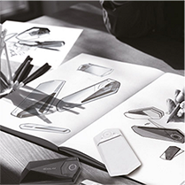
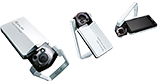

真我视频
产品理念
-

EXILIM TR的美颜技术，
是卡西欧作为自拍潮流相机制造商所拥有的，
专为美丽打造的图像算法和经验技术。
这是仅凭高分辨率和图像处理技术所无法呈现
的，更自然更健康的美颜效果。
我们称之为自拍神器的理由，正在于此。
憧憬之美 Beauty
令人爱不释手的自拍神器
构成EXILIM TR的所有元素，
皆为自拍而生，以独特个性打磨而成。
将自拍的乐趣、拥有的喜悦与分享的快乐，
合而为一。这，就是卡西欧所追求的
真正的品牌价值。 -

自定义理念
美丽的自拍，来源于随心所欲的自拍方式，在这个理念的基础上，
所诞生的便是满足自由式拍摄的独特构造。可自由变换的外框角度，
无论是手持还是支架拍摄，都支持长时间动画摄影，让你随心所欲
地展示自拍所带来的无穷可能。 -
无需修补 即刻呈现精致美颜效果
肌肤更平滑美丽、发质更显柔顺自然、
眉眼处轮廓清晰，神采奕奕。
为满足女性理想中的效果，而开发出的独特
美颜模式。以往通过滤镜等均一图像处
理所不能达到的效果，
现在通过先进的美颜技术，使五官呈现
出立体的美。
-
独特的精准美颜模式
使用高精度脸部辨识技术，可根据检测到的五官各部位的精准
数据，针对肌肤、毛发、眼镜等不同部位，分别进行图像处理。
同时，突出面部肌肤立体感，从而达到减少暗斑、皱纹的效果，
打造自然又美丽的肌肤质感。 -
我的美，不受环境所限。
为实现随时随地，随心所欲地尽情展现美丽个性，
在独特的图像处理引擎基础上，配备了高性能
感应器、镜头和LED，以满足在昏暗处和逆光时
的拍摄需求，
这是为追求高画质自拍境界而度身打造的组合装备。
您只需按下快门，剩下的交给相机处理，
即可获得理想中的美丽自拍照。 -
先进相机性能
在采用先进的图像处理器EXILIM引擎HS Ver.3的基础上，配备了可捕
捉大量光源的高感应度1/1.7透视型CMOS传感器以及可呈现精美色彩
层次的自拍专用21mm广角镜，从而实现水润粉嫩的肌肤质感。 -
这里，有你想要的美。
在设计EXILIM TR的画质时，听取了众多客户的心声。
其中，针对最难以表现的美白感，采集了
大量数据进行试验检测，为各种各样女性肌肤
分别设置了不同精度的美白效果。
通过不断尝试，最终实现了使女性产生共鸣的美。
-
针对500名以上的消费者进行了模拟实际使用情况的问卷调查，并根据
不同机型和设定比较画质的区别。通过针对微色调表现的对比斟酌，
实现了对美白效果的细腻调整，从而打造更自然精致的高画质。 -
从今天起，做“粉嫩俏佳人”
在自拍潮流中，力求呈现女性所追求的当下美。
最新产品
于是，便诞生了 “粉嫩”这一新美颜标准。
将现代女性的肌肤质感，衬托得更加健康水润，真实生动美丽。
自拍潮流的新风尚，由EXILIM TR为你创造。
Exilim Store